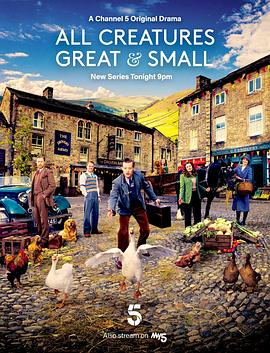

万物生灵 第二季 / All Creatures Great and Small Season 2
又名：新万物生灵 第二季 / 万物既伟大又渺小 第二季 / 芸芸众生 第二季 / 菜鸟兽医日记(台)
第二季依然具有疗愈作用
作品信息
| 导演 | 布莱恩·派西维尔 / 萨莎·兰塞姆 / 安迪·海伊 |
| 编剧 | 本·凡斯通 / 克洛伊·米·蔺·尤尔特 / 詹姆斯·赫里奥特 / 黛比·奥马利 |
| 主演 | 尼古拉斯·瑞夫 / 蕾切尔·申顿 / 卡勒姆·伍德豪斯 / 萨缪尔·韦斯特 / 安娜·梅德利 / 菲利普·希尔-皮尔逊 / 伊莫金·克劳森 / 派翠西亚·霍吉 / 德里克 / 尤安·迈克纳顿 / 朱恩·沃森 / 托尼·皮茨 / 加布里埃尔·奎格利 / 德鲁·凯恩 / Seumas MacKinnon |
| 类型 | 剧情 / 喜剧 |
| 制片国家/地区 | 英国 / 美国 |
| 语言 | 英语 |
| 首播 | 2021-09-16(英国) |
| 季数 | 2 |
| 集数 | 6 |
| 单集片长 | 46分钟 |
| IMDb | tt13576280 |
最后一次看到是 2026-08-12T21:11:23+08:00 · 豆瓣原页